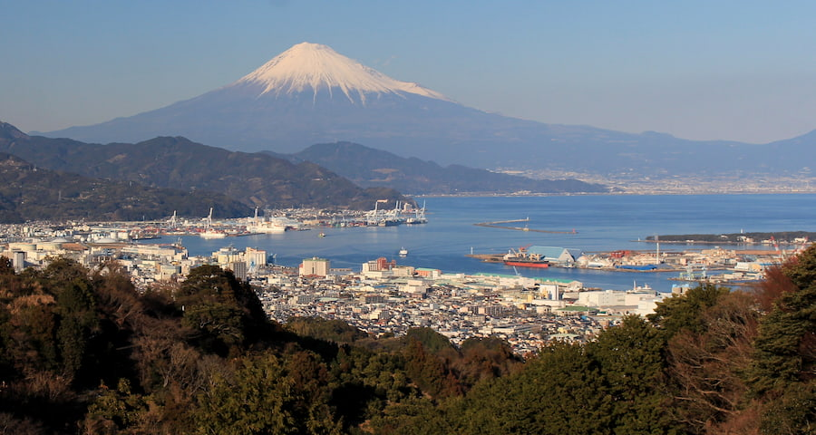

Shizuoka City lies in central Shizuoka Prefecture, about halfway between Tokyo and Nagoya along the Tōkaidō Corridor, between Suruga Bay to the south and the Minami Alps in the north. Shizuoka had the largest area of any municipality in Japan after merging with Shimizu City in April 2003, until February 2005, when Takayama in Gifu Prefecture superseded it by merging with nine surrounding municipalities.
